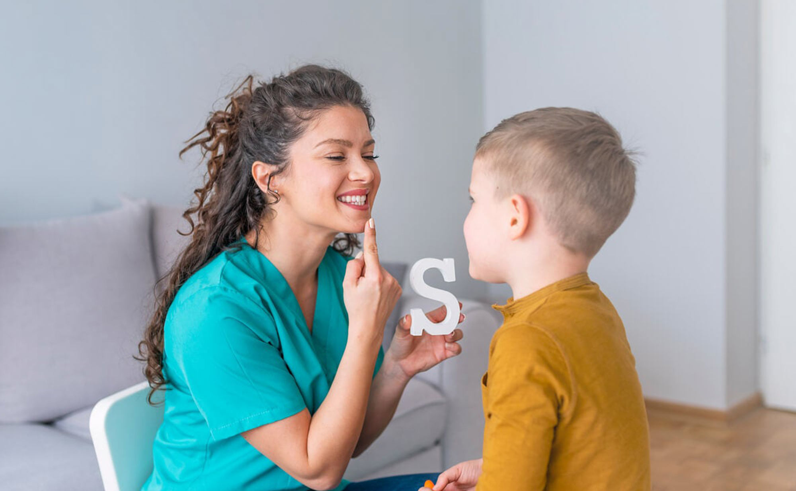

Pabla Andrea Concha · Fonoaudióloga
Atención fonoaudiológica especializada para niños, adultos y adultos mayores, con un enfoque humano, profesional y personalizado.
Agendar evaluaciónSoy Pabla Andrea Concha, fonoaudióloga especializada en trastornos del lenguaje, habla y funciones cognitivas.
Mi enfoque no es solo tratar síntomas, sino comprender a cada paciente de forma integral, diseñando tratamientos personalizados que generan avances reales y sostenibles.
Trabajo con compromiso, cercanía y profesionalismo, acompañando cada proceso paso a paso.

Trabajo con personas en distintas etapas de la vida:
El objetivo no es solo mejorar habilidades, sino devolver seguridad, confianza y bienestar en la vida diaria.
Cada avance impacta directamente en cómo te comunicas, te relacionas y te desarrollas.
Agenda una evaluación y comencemos juntos este proceso.
Agendar ahoraCupos limitados por atención personalizada